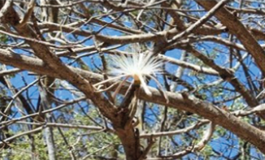

Bosque tropical caducifolio o selva bajaPresenta un clima cálido y una altitud que va de 0 a 1,900 msnm. Su temperatura media
anual es de 20 a 29°C. A lo largo del año presenta una estación de secas y otra de lluvias muy
marcadas. La precipitación varía de 300 a 1800 mm
En condiciones no alteradas o poco alteradas suelen presentar árboles de hasta 15 m de
alto, algunos presentan colores llamativos y pierden las hojas casi totalmente durante 5
a 8 meses. Se considera
un ecosistema que sufre
un daño anual de 2% en la
pérdida de la vegetación.

La vegetación más
frecuente en este
ecosistema se encuentra
formada por copalillo o palo
colorado, ceiba, cazahuate y
algunos cactus. Al igual que
la selva alta perennifolia,
este ecosistema está
representado por la
misma fauna, así como
por las bacterias y hongos
degradadores.
Angel Esteban Tabardillo BrionesDayann Gerardo Cordova ArmendarizJuan Pablo Ortiz GonzalesIvan Alberto Rodriguez HernandezJose Rigoberto Martinez Peraza